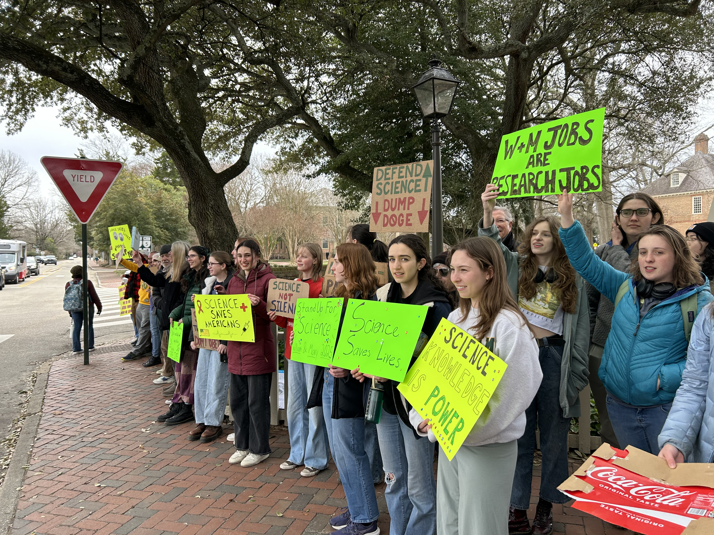

Enjoy Spring Break!
I wish you all a good Spring Break.
If you want to learn more about computational neuroscience over break, here are two ideas (entirely optional).
You could read Genealogy of the “Grandmother Cell” — a short history of neuroscience essay (30 min) that considers philosophical aspects of the concept of feature detectors in visual processing.
As a continuation of our discussion of "sparse coding," you might watch the seminar "From Natural Scene Statistics to Models of Neural Coding & Representation" by Bruno Olshausen (part 1 only, duration 60 min). This talk was part of a summer school on deep learning and feature detection. The target audience is graduate students studying visual neuroscience and/or computer vision.
Be young. Be safe.
--Greg
